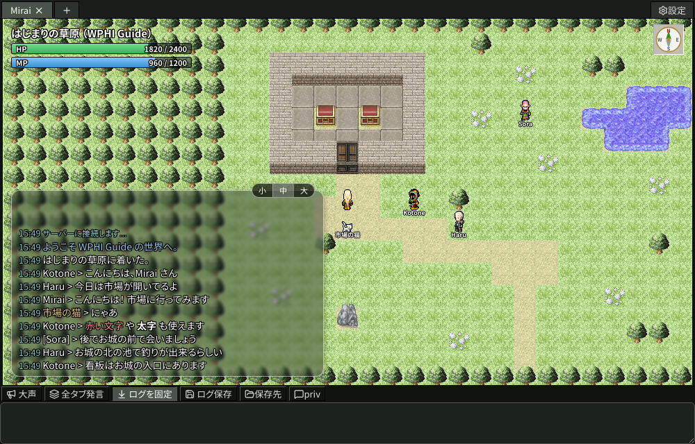
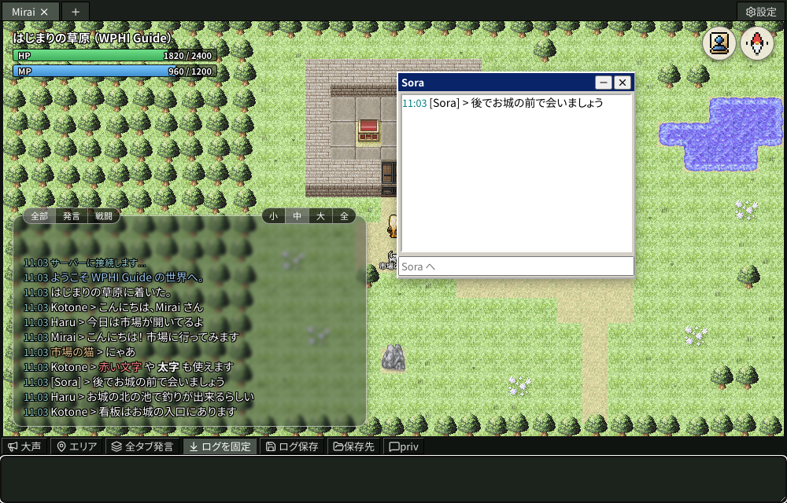
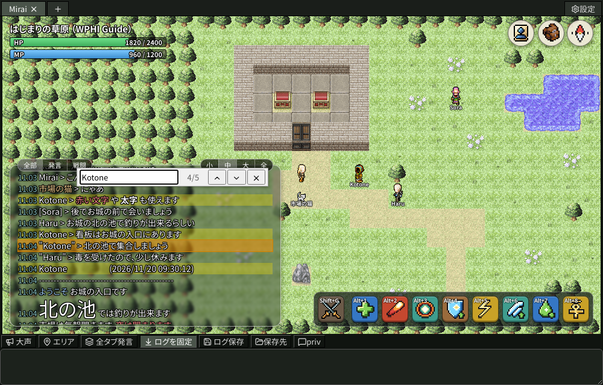
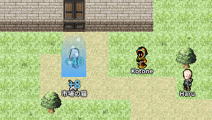
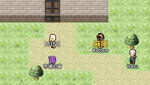
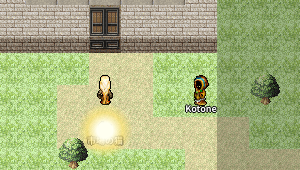
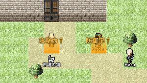

WPHI 利用者ガイド
PHI のクライアント WPHI の使い方
PHI のクライアント WPHI の使い方
画像は説明の為に作った架空の世界とキャラで撮りました。
実際の世界では、その世界のマップチップとキャラグラで表示します。
WPHI のページの「最新の版を取得する」から、OS に合ったファイルを取得してください。
Windows・macOS・Linux の版があります。
どのファイルも署名していないので、初めて開く時に OS が警告を出します。
開き方は WPHI のページの「初めて開く時」に書いています。
新しい版が出ると、起動した時に知らせます。
メニューの「ツール」→「新しい版を確かめる」でも確かめる事が出来ます。
起動すると、キャラを選ぶ画面になります。

始め方は3つあります。
*.chara のあるフォルダ)を入れ、「取り込む」を押してください。登録していたキャラと設定を取り込み、Philly のキャラグラとマップチップもそのまま使います
世界の一覧は、新規接続の設定を配布元から自動で取得して作ります。
一覧に無い世界は、サーバとポートを直接書いてください。
登録したキャラの「接続」を押すと、そのキャラでタブが1つ開きます。
上の「＋」で別のキャラのタブを開けば、同時に何人でも遊べます。
Philly のフォルダが無い場合は、キャラグラとマップチップを配布元から取得してください。
メニューの「ツール」→「キャラグラとマップチップを取得する...」で開きます。

接続すると、ログ・地図・ステータスを表示します。

| 場所 | 表示する物 |
|---|---|
| 一番上 | タブ。キャラごとに1つ開きます。× で切断して閉じ、右端の「設定」で設定を開きます |
| 左 | 地図。真ん中が自分です。窓の大きさに合わせて見える範囲が変わります(地図の表示) |
| 地図の右 | 上が方角、下が見えているキャラの名前です |
| 地図の下 | HP と MP のバー、Fighter・Wizard・Merchant・Creator の値、Gold です。「Status」を押すと、ステータスを詳しくログ欄に出します |
| 右 | ログ欄。発言や出来事を時刻付きで表示します |
| ログ欄の下 | 切り替えのボタン。大声、全タブ発言、ログを固定、ログ保存、保存先(ログのフォルダを開く)、priv があります |
| 一番下 | 入力欄。発言やコマンドを書いて Enter で送ります |
メニューの「表示」で、窓の形を3つから選びます。

check と送ると、ログ欄に出ます
入力欄に書いて Enter を押すと発言します。
Shift+Enter で改行し、Ctrl+Enter でパーティーに発言します。
priv を受けると、右に priv の欄を開きます。

priv の欄の下の入力欄に書くと、選んでいる相手に送ります。
新しい相手に送るには、相手の名前を選んで「選んだ相手と話す」を押してください。
看板の前で S を押すと、看板のエディタを開きます。
読むのは A、消すのは D です。

Ctrl+F(macOS は Cmd+F)で、ログ欄の右上に検索の欄を開きます。
メニューの「操作」→「ログを検索」でも開けます。

探せるのはログ欄に残っている行だけです。
古いログは、ログを保存しておけばファイルで探せます。
キー操作は Philly と同じです。
入力欄にいる時は文字を書くので、移動などに使う時は Esc でログ欄へ移ってください。
| キー | 動作 |
|---|---|
| テンキー、矢印(フルキー移動なら U I O J K L M 7 8 9) | 移動 |
| Esc | 入力欄からログ欄へ移り、キーを操作に使う |
| Tab | 入力欄へ移る |
| Z、X、C | アイテムを拾う、置く、使う |
| Space | 攻撃 |
| A、S、D | 看板を読む、書く、消す |
| Alt+W、Alt+E など | 系統魔法(Wizard eye、Eagle eye など) |
| Shift+F5 | 地図の窓を出す、隠す |
| T、Shift+T | 回転する地図、北固定の地図 |
| Ctrl+Tab | 次のタブ |
| Ctrl+F(macOS は Cmd+F) | ログを検索 |
全部のキーはクライアントの要件と挙動の「キー操作」に書いています。
地図の表示はメニューの「表示」で切り替えます。
ログに流れた発言や戦闘の行を読み取り、地図のキャラの上に吹き出しや数字を出します。
メニューの「表示」→「吹き出しと HP・MP の増減をマップに出す」で切り替えます。







演出はログの文面から決めています。サーバによって文面が違うと、出ない演出があります。
同じ名前のキャラが複数いる時は、自分に一番近いキャラに出します。
タブの右端の「設定」で開きます。

\n で改行します
設定とキャラの情報は、設定フォルダに置きます。
メニューの「ツール」→「設定フォルダを開く」で開けます。
設定フォルダにはキャラ ID も平文で入っています。
設定フォルダを他人に渡さないでください。